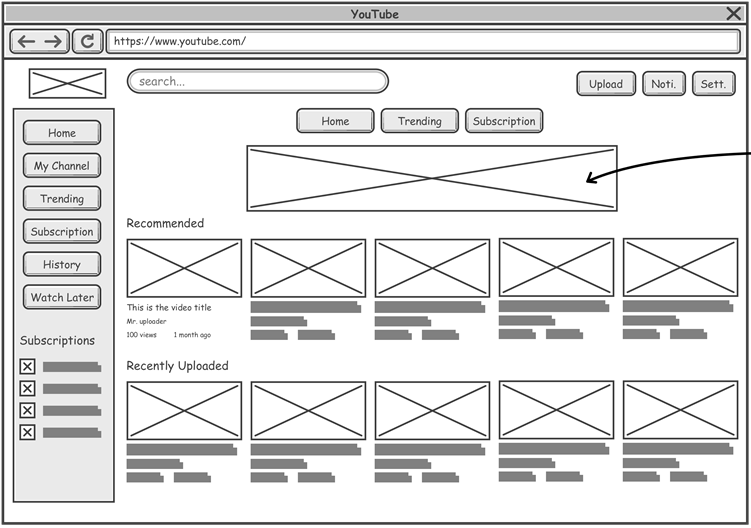

Когда компания нанимает сотрудников, она ожидает, что новые работники будут соответствовать требованиям своей работы, а также смогут вписаться в коллектив и легко ладить с коллегами. Соответственно, важно, чтобы у сотрудников был ряд навыков, которые помогут им соответствовать критериям работодателя и быть отличным выбором для своей работы. В целом, навыки можно разделить на 2 категории: социальные (межличностные) и профессиональные.
Межличностные Навыки (на работе)
Межличностные навыки - это поведение и тактики, которые человек использует для взаимодействия с другими. Некоторые примеры межличностных навыков:
- Работа в команде
- Коммуникация
- Активное слушание
- Надежность
- Ответственность
- Cопереживание
- и т.д.
Профессиональные Навыки (для Веб Разработчика)
Языки
HTML (HyperText Markup Language)
HTML (HyperText Markup Language) - это стандартный язык разметки который используется для создания веб-страниц. Язык разметки - это способ описания содержания веб-страницы, чтобы определить, как должена быть отображена информация (текст, картиноки и подобное) на странице. Например, посмотрите на эту веб-страницу. Весь текст, который написан здесь, размечен с помощью HTML.

CSS (Cascading Style Sheets)
CSS (Cascading Style Sheets) - это язык, который используется для описание стиля веб-страниц. Если HTML используется для создания контента веб-страницы, то CSS описывает то, как эта старница, созданная с помощью HTML, должна выглядеть. Посмотрите снова на эту веб-страницу: шрифты, цвета заголовоков и параграфов, фон, анимации меню, размеры текста и картинок - все это описано с помощью CSS. Несмотря на то, что HTML и CSS не считаются языками программирования (так как они не используются для выполнения вычислений), они, безусловно, являются самыми важными инструментами веб-разработчика.

Javascript
Javascript (или JS) - это язык программирования, который используется для создания интерактивных элементов на веб-страницах, таких как всплывающие окна, сложные анимации, отправка и обработка форм и т.д.

Дизайн Вебсайта
Эскизы Вебсайта
Эскиз - это один из первых шагов в процессе разработки веб-проекта. Эскиз может использоваться для того, чтобы прояснить идеи и получить обратную связь.
Теория Цвета
Теория цвета - это совокупность правил и руководств, которые используются дизайнерами для того, чтобы улучшить восприятие и взаимодействие пользователя на сайте с помощью привлекательные цветовые схемы в визуальных интерфейсах. Разработчики обычно используют цветовой круг, который помогает им выбрать лучшие цвета для их вебсайта. Опытные разработчики знают концепции теории цвета и какие цвета гармонируют друг с другом. Хотя, начинающие разработчики обычно используют вебсайты, такие как Paletton, чтобы помочь им подобрать привлекательные цвета.